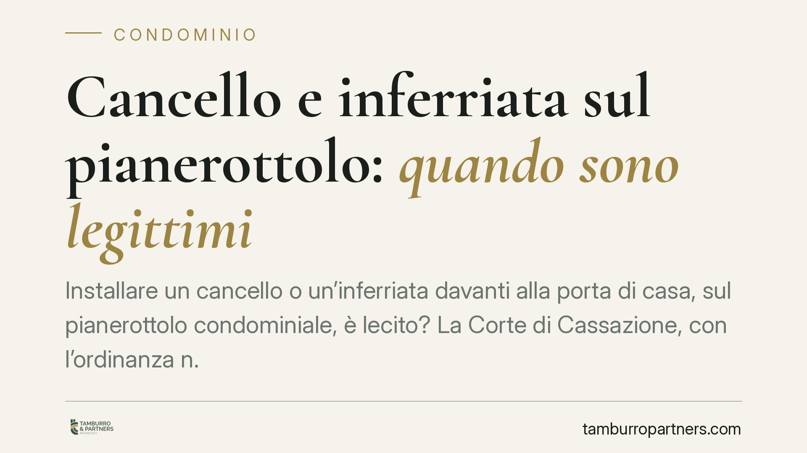

Cancello e inferriata sul pianerottolo: quando sono legittimi
Installare un cancello o un'inferriata davanti alla porta di casa, sul pianerottolo condominiale, è lecito? La Corte di Cassazione, con l'ordinanza n. 16944/2026, offre una risposta netta: sì, purché non si ostacoli il transito degli altri condomini. E ribalta un punto decisivo: chi chiede la rimozione deve provare il danno all'uso comune.

Il caso
Una condomina chiedeva la rimozione di un cancello installato da un vicino sul pianerottolo comune, davanti alla sua porta di ingresso. La tesi: quella struttura comprimeva l'uso di uno spazio appartenente a tutti.
La Corte di Cassazione, con l'ordinanza n. 16944 del 30 maggio 2026, ha respinto la domanda. Il principio è semplice nella formulazione, ma ricco di conseguenze pratiche: l'installazione è legittima se non ostacola concretamente il transito sul pianerottolo.
Inquadramento normativo
La norma di riferimento è l'articolo 1102 del Codice civile, che disciplina l'uso della cosa comune. La disposizione consente a ciascun condomino di servirsi del bene comune, a due condizioni: non alterarne la destinazione e non impedire agli altri partecipanti di farne pari uso. Il pianerottolo rientra tra le parti comuni dell'edificio ed è destinato, essenzialmente, al transito verso le singole unità immobiliari.
Rileva anche l'articolo 1122 c.c., che vieta al singolo di eseguire, nelle parti di proprietà esclusiva, opere che rechino danno alle parti comuni o ne pregiudichino stabilità, sicurezza o decoro architettonico.
Il punto centrale dell'ordinanza riguarda però un profilo diverso: la ripartizione dell'onere della prova. La Cassazione chiarisce che spetta a chi chiede la rimozione dimostrare che il manufatto comprime realmente l'uso comune. Non basta, cioè, lamentare una limitazione astratta o teorica: occorre provare che il transito o le altre funzioni del pianerottolo risultano concretamente impedite o significativamente ridotte.
Cosa cambia in concreto
La decisione sposta l'equilibrio a favore del condomino che installa la struttura. Un cancello o un'inferriata che si limitino a delimitare l'accesso alla propria porta, lasciando libero il passaggio verso le altre unità, rientrano in un uso legittimo della cosa comune. Non si tratta di appropriazione dello spazio, ma di un suo utilizzo più intenso, consentito finché compatibile con il pari diritto degli altri.
Per chi vorrebbe opporsi, la posizione si complica. Non è sufficiente sostenere che lo spazio è comune o che la presenza del cancello risulta sgradevole. Serve una prova puntuale: una misurazione che dimostri la riduzione dello spazio di manovra, un impedimento al passaggio di persone o cose, un ostacolo in caso di emergenza, un pregiudizio al decoro architettonico documentabile.
Resta fermo che ogni valutazione è concreta e dipende dalle caratteristiche del singolo pianerottolo. Un corridoio stretto e un ampio ballatoio non tollerano lo stesso ingombro. Il principio generale non autorizza installazioni indiscriminate: legittima la struttura solo se, in quel contesto, non comprime l'uso altrui.
Va inoltre ricordato che il regolamento condominiale può contenere clausole più restrittive. Se il regolamento di natura contrattuale vieta modifiche agli spazi comuni o richiede autorizzazioni, quelle previsioni prevalgono e vanno rispettate, a prescindere dal principio generale fissato dalla Cassazione.
Cosa fare in concreto
- Verificate il regolamento condominiale prima di qualsiasi installazione: eventuali divieti o obblighi di autorizzazione vincolano il singolo e possono rendere illegittima anche un'opera di per sé compatibile con l'art. 1102 c.c.
- Documentate lo stato dei luoghi con fotografie e misurazioni dello spazio residuo di transito: in caso di contestazione, la prova concreta diventa decisiva.
- Se intendete opporvi a un cancello già installato, raccogliete elementi oggettivi sull'ostacolo al passaggio o sul pregiudizio al decoro: una doglianza generica difficilmente supera il vaglio del giudice.
- Valutate la via assembleare prima di quella giudiziale: la discussione in assemblea può consentire soluzioni concordate ed evitare un contenzioso dall'esito incerto.
- Conservate la documentazione tecnica (planimetrie, eventuali titoli edilizi) utile a dimostrare la compatibilità o l'incompatibilità dell'opera con la destinazione del pianerottolo.
---
*Contributo informativo a cura di Tamburro & Partners - Avv. Giuseppe Tamburro. Non costituisce parere legale.*
Ogni condominio ha una storia a sé.
Se gestisci un'amministrazione e vuoi un confronto su una specifica questione condominiale, scrivi allo studio. Ti rispondiamo entro un giorno lavorativo.